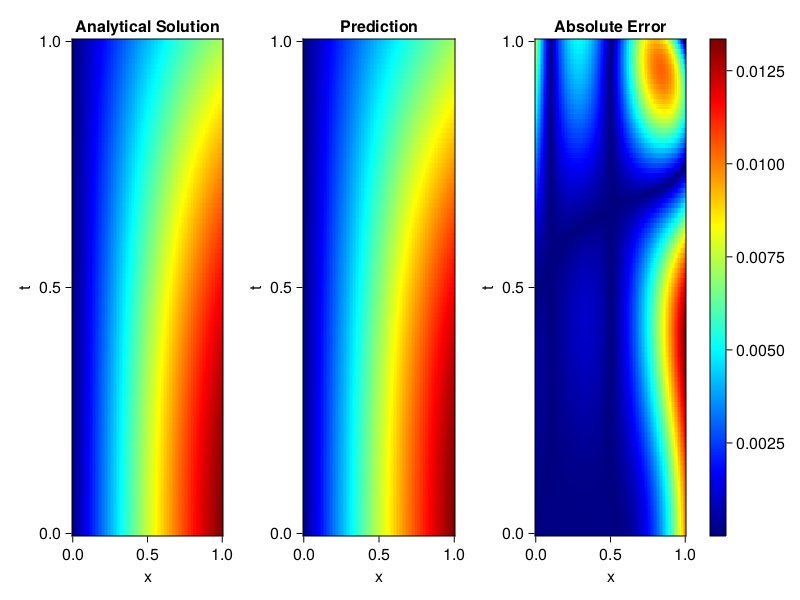
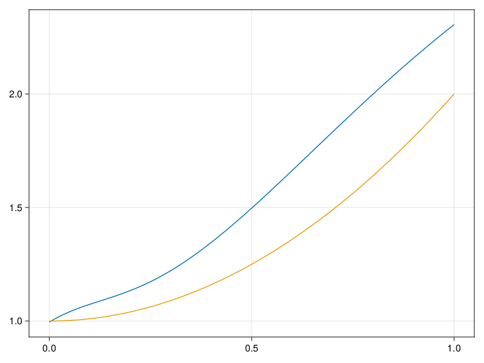

Inverse problem for the wave equation with unknown velocity field
We are going to sovle the wave equation.
using Sophon, ModelingToolkit, IntervalSets
using Optimization, OptimizationOptimJL
@parameters x, t
@variables u(..), c(..)
Dₜ = Differential(t)
Dₜ² = Differential(t)^2
Dₓ² = Differential(x)^2
s(x,t) = abs2(x) * sin(x) * cos(t)
eq = Dₜ²(u(x,t)) ~ c(x) * Dₓ²(u(x,t)) + s(x,t)
bcs = [u(x, 0) ~ sin(x),
Dₜ(u(x, 0)) ~ 0,
u(0, t) ~ 0,
u(1, t) ~ sin(1) * cos(t)]
domains = [t ∈ Interval(0.0, 1.0),
x ∈ Interval(0.0, 1.0)]
@named wave = PDESystem(eq, bcs, domains, [t,x], [u(x,t),c(x)])\[ \begin{align} \frac{\mathrm{d}}{\mathrm{d}t} \frac{\mathrm{d}}{\mathrm{d}t} u\left( x, t \right) =& c\left( x \right) \frac{\mathrm{d}}{\mathrm{d}x} \frac{\mathrm{d}}{\mathrm{d}x} u\left( x, t \right) + \cos\left( t \right) \left|x\right|^{2} \sin\left( x \right) \end{align} \]
Here the velocity field $c(x)$ is unknown, we will approximate it with a neural network.
pinn = PINN(u = FullyConnected((2,16,16,16,1), sin),
c = FullyConnected((1,16,16,1), tanh))
sampler = QuasiRandomSampler(500,100)
strategy = NonAdaptiveTraining(1, (10,10,1,1))NonAdaptiveTraining{Int64, NTuple{4, Int64}}(1, (10, 10, 1, 1))Next we generate some data of $u(x,t)$. Here we place two sensors at $x=0.1$ and $x=0.5$.
ū(x,t) = sin(x) * cos(t)
x_data = hcat(fill(0.1, 1, 50), fill(0.5, 1, 50))
t_data = repeat(range(0.0, 1.0, length = 50),2)'
input_data = [x_data; t_data]
u_data = ū.(x_data, t_data)1×100 Matrix{Float64}:
0.0998334 0.0998126 0.0997503 0.0996464 … 0.275281 0.267213 0.259035Finally we construct the inverse problem and solve it.
additional_loss(phi, θ) = sum(abs2, phi.u(input_data, θ.u) .- u_data)
prob = Sophon.discretize(wave, pinn, sampler, strategy; additional_loss=additional_loss)
@time res = Optimization.solve(prob, BFGS(), maxiters=1000)u: ComponentVector{Float64}(u = (layer_1 = (weight = [0.7845926895299523 1.1701532416318718; -0.4081225157216529 -0.6823199930832848; … ; -0.03497548895615179 -0.40438336639573264; -0.8257790804173135 0.07710974289804985], bias = [-0.2896751587947063; -0.10531575815130118; … ; 0.0223284874746831; 0.014009032697197046;;]), layer_2 = (weight = [0.060655508105060006 0.43246611913579974 … -0.02482544650787096 0.0812876118919171; 0.5279774628326577 -0.048276208365030174 … 0.194805688572593 -0.19557606410699682; … ; -0.17335394993546985 -0.30658448916810344 … -0.006999643506079784 0.5091223907675869; 0.14705227572619034 0.10226857716252766 … 0.4803280617900872 0.10042009527041677], bias = [-0.060847143767539226; 0.08399672653350902; … ; 0.11768134549148206; -0.026119244118078644;;]), layer_3 = (weight = [-0.4605860597534587 0.49333904226591035 … 0.4857577547745896 -0.297194552125659; 0.11387976816167886 -0.2278056060274015 … -0.6207777831093707 -0.11589296994432616; … ; -0.40741938458225385 0.3198635491652674 … -0.058175963640011596 -0.08405171179882331; 0.5961572641288493 0.485034678547419 … -0.028647299077168818 0.44094459713531553], bias = [0.02251354919551007; -0.06450330200826238; … ; 0.1028719127574738; -0.04641833438769369;;]), layer_4 = (weight = [0.2650677155496775 0.7215776588811009 … -0.02326189438819819 -0.5466670015657455], bias = [0.09355554137632445;;])), c = (layer_1 = (weight = [0.07409531414515537; -0.4613145610783924; … ; -0.37665916028548696; -1.738110321381582;;], bias = [0.025359009454344616; 0.04341138624196535; … ; 0.25123216358899453; -0.020154789936393674;;]), layer_2 = (weight = [0.4323708274680607 -0.2523199676944827 … 0.6234814859725363 -0.6677563331033656; 0.491927768279606 -0.6450152605003149 … -0.5831384983326504 -0.07679251275219134; … ; 0.639973981114104 -0.15027097525985594 … -0.214403246154385 -0.2285589837835518; 0.3317897198735554 -0.5157755236386701 … 0.7778015858438169 0.3222565670023606], bias = [-0.011156793638053166; -0.01226157970792103; … ; -0.087085957179223; -0.016144788552764935;;]), layer_3 = (weight = [0.08022661978182048 -0.13936166998856223 … -0.42036561764500757 -0.7838269308968691], bias = [0.4055053489439318;;])))Let's visualize the predictted solution and inferred velocity
using CairoMakie
ts = range(0, 1; length=100)
xs = range(0, 1; length=100)
u_pred = [pinn.phi.u([x, t], res.u.u)[1] for x in xs, t in ts]
c_pred = [pinn.phi.c([x], res.u.c)[1] for x in xs]
u_true = [ū(x, t) for x in xs, t in ts]
c_true = 1 .+ abs2.(xs) |> vec
axis = (xlabel="x", ylabel="t", title="Analytical Solution")
fig, ax1, hm1 = heatmap(xs, ts, u_true, axis=axis; colormap=:jet)
ax2, hm2= heatmap(fig[1, end+1], xs, ts, u_pred, axis= merge(axis, (;title = "Prediction")); colormap=:jet)
ax3, hm3 = heatmap(fig[1, end+1], xs, ts, abs.(u_true .- u_pred), axis= merge(axis, (;title = "Absolute Error")); colormap=:jet)
Colorbar(fig[:, end+1], hm3)
fig
fig, ax = lines(xs, c_pred)
lines!(ax, xs, c_true)
fig